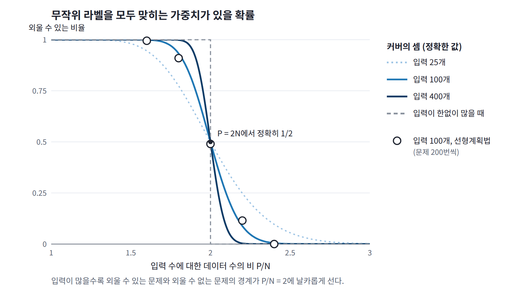
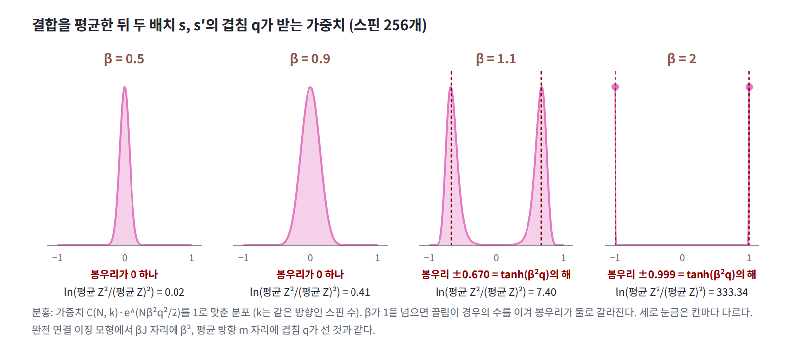
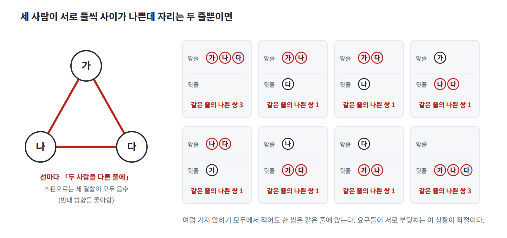
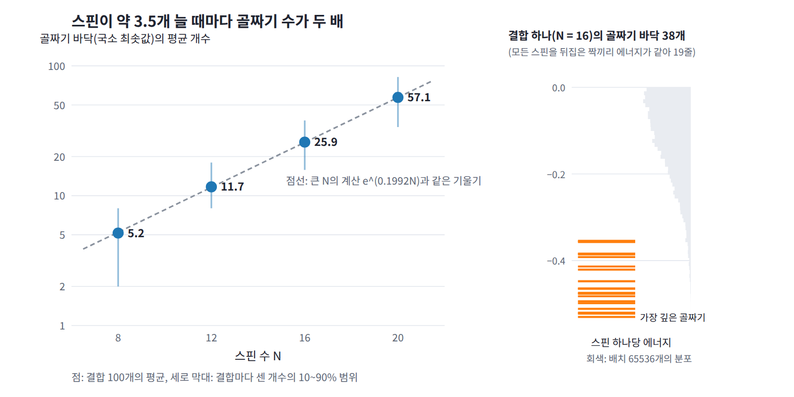
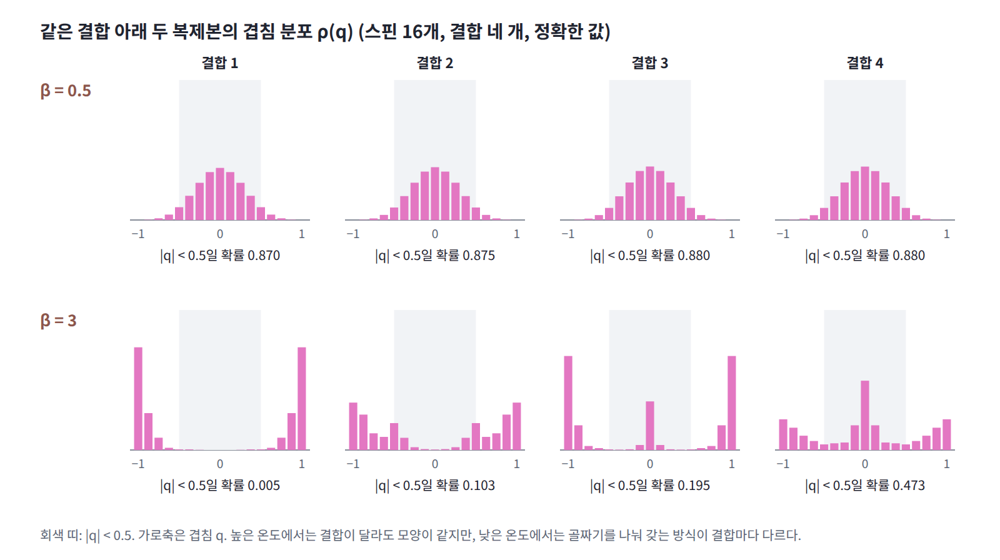

16장 — 스핀 글래스와 레플리카 방법
이 장의 물음
입력이 100개인 퍼셉트론을 생각해 보자. 편향 없이 입력의 가중합 부호로 +1이나 −1을 내는, 가장 단순한 선형 분류기다. 표준정규분포에서 뽑은 무작위 입력 벡터 P개에 동전을 던져 라벨을 붙인 뒤, 모든 라벨을 맞히는 가중치가 있는지를 선형계획법으로 확인한다. 문제를 200번씩 새로 뽑아 보면 P가 160일 때는 99.5%가 외워지고, 180이면 91%, 200이면 49%, 220이면 11.5%로 떨어지며, 240이면 한 번도 외워지지 않는다. 입력 수의 두 배 근처에서 외울 수 있는 문제가 외울 수 없는 문제로 바뀌는 것이다. 입력을 400개로 늘리면 이 바뀜은 더 날카로워져, 입력 수의 1.8배에서는 거의 늘 외워지고 2.2배에서는 거의 외워지지 않는다. 심층 신경망도 같은 일을 한다. 장·벵지오·하르트·레흐트·비냘스(2017)는 이미지 분류용 합성곱 신경망이 무작위로 바꾼 라벨도, 구조 없는 잡음 이미지도 「쉽게 맞춘다」고 보고했다.

여기서 두 가지가 눈에 띈다. 외울 수 있는지는 데이터를 뽑을 때마다 달라지는 운의 문제인데도, 입력이 많아지면 답이 거의 하나로 정해진다. 그리고 경계의 값 2는 특정한 데이터 하나가 아니라 무작위로 뽑힌 데이터 전체가 가진 성질이다. 이런 값을 계산하려면 데이터를 고정한 채 조건을 모두 만족하는 가중치가 얼마나 많은지를 재고, 그 양의 로그를 데이터에 대해 평균해야 한다. 이것은 결합 계수가 무작위로 뽑히는 스핀 계에서 ln Z의 평균을 구하는 문제와 모양이 같다. 이 계산에 이르려면 다음 물음들을 차례로 풀어야 한다.
- 데이터를 뽑을 때마다 달라지는 문제인데, 왜 입력이 많아지면 외울 수 있는지가 거의 하나로 정해질까?
- 무작위로 뽑히는 것이 섞인 계에서 평균은 어떤 순서로 내야 실제로 만나는 계 하나를 알려 줄까?
- 로그의 평균은 직접 계산하기 어려운데, 어떻게 구할까?
- 결합이 무작위인 스핀들은 낮은 온도에서 어떤 모습으로 굳을까?
- 홉필드 네트워크는 패턴을 몇 개까지 기억하고, 퍼셉트론의 경계는 왜 하필 입력 수의 2배일까?
역사: 이상한 합금에서 학습 이론까지
1970년대 초, 금 같은 자성 없는 금속에 철 같은 자성 원자를 조금 섞은 합금에서, 온도를 내리면 원자 하나하나의 자석(스핀)이 한 방향으로 정렬하지 않고 원자마다 제멋대로의 방향으로 굳는다는 실험 결과가 나왔다. 보통의 유리에서 원자의 위치가 규칙 없이 굳어 있는 것에 빗대어 이 상태를 스핀 글래스라 불렀고, 1972년 카넬라와 마이도시가 바깥 자기장을 줄일수록 자화율의 봉우리가 뾰족해진다는 것을 보이자 진짜 상전이일 수 있다는 생각이 퍼졌다.
| 연도 | 사람 | 내용 |
|---|---|---|
| 1972 | 카넬라, 마이도시 | 금–철 합금의 자화율에서 뾰족한 봉우리 (스핀 글래스 상전이의 실험 신호) |
| 1975 | 에드워즈, 앤더슨 | 무작위 결합 모형, 복제본으로 ln Z를 평균하는 요령, 겹침이라는 질서 변수 |
| 1975 | 셰링턴, 커크패트릭 | 모든 쌍을 무작위 결합으로 묶은 모형(SK 모형), 온도 0에서 음의 엔트로피 |
| 1977 | 사울리스, 앤더슨, 파머 | 반작용 항을 넣은 평균장 방정식 (TAP 방정식) |
| 1978 | 드알메이다, 사울리스 | 모든 복제본 쌍의 겹침이 같다는 가정이 낮은 온도에서 불안정함 |
| 1979~1983 | 파리시 | 레플리카 대칭 깨짐, 그리고 그것을 수많은 평형 상태의 공존으로 읽는 해석 |
| 1983 | 커크패트릭, 겔라트, 베키 | 스핀 글래스 계산 방법을 최적화 문제에 옮긴 모의 담금질 |
| 1985 | 아미트, 구트프로인트, 솜폴린스키 | 홉필드 네트워크의 기억 용량 |
| 1988 | 가드너 | 가중치 공간의 부피로 퍼셉트론의 용량 계산 |
| 1992 | 승, 솜폴린스키, 티시비 | 예제로 배우는 학습의 통계역학 |
| 2003, 2006 | 게라, 탈라그랑 | 파리시가 구한 자유에너지 식의 수학적 증명 |
| 2009 | 도노호, 말레키, 몬타나리 | 반작용 항을 넣은 근사 메시지 전달(AMP) |
| 2021 | 파리시 | 노벨 물리학상 |
이론은 1975년에 두 논문으로 시작되었다. 에드워즈와 앤더슨은 실제 합금 대신 이웃한 스핀 쌍마다 평균 0인 정규분포에서 결합을 뽑는 모형을 세우고, ln Z의 평균을 구하려고 ln Z = lim (Zⁿ − 1)/n이라는 항등식을 썼다. 같은 결합을 나눠 가지되 스핀은 따로 움직이는 복제본 n개를 도입한 것이다. 같은 해 셰링턴과 커크패트릭은 모든 쌍을 무작위 결합으로 묶어 정확히 풀릴 것 같은 모형을 만들었는데, 그 풀이는 온도 0에서 엔트로피가 음수였다. 두 사람은 2025년의 회고에서 이것을 「이산 변수에서는 근본적으로 금지된 결과로, 계산 절차에 심각한 잘못이 있다는 신호」였다고 적었다. 1977년 사울리스, 앤더슨, 파머는 레플리카 방법을 피해 평균장 방정식에 반작용 항을 더했고, 레플리카 방법 자체는 1979년부터 파리시가 복제본들의 대칭을 깨뜨린 풀이를 내놓으면서 되살아났다.
같은 무렵 IBM에 있던 커크패트릭은 스핀 글래스의 시뮬레이션 방법을 컴퓨터 부품 배치 같은 최적화 문제에 옮겨 모의 담금질(simulated annealing)을 만들었고, 온도를 천천히 내리며 분포를 옮기는 ML의 여러 절차가 이 이름을 물려받았다. 신경망 쪽에서는 아미트, 구트프로인트, 솜폴린스키가 1985년 홉필드 네트워크의 용량을 스핀 글래스로 계산했고, 에든버러 대학교의 엘리자베스 가드너는 1988년 1월 퍼셉트론의 용량을 가중치 공간의 부피로 계산한 두 논문을 발표한 뒤 그해 6월 서른 살로 세상을 떠났다.
레플리카 방법의 결과는 오랫동안 증명 없이 쓰이다가, 게라(2003)와 탈라그랑(2006)이 파리시의 자유에너지 식을 증명하면서 정리가 되었다. 2021년 노벨 물리학상은 절반이 기후 모형을 세운 마나베와 하셀만에게, 나머지 절반이 「원자에서 행성까지 모든 규모의 물리계에서 무질서와 요동의 상호작용을 발견한」 파리시에게 돌아갔다. 스웨덴 왕립과학원의 보도자료는 그의 발견이 물리학뿐 아니라 「수학, 생물학, 신경과학, 기계학습처럼 아주 다른 분야」의 현상을 이해하게 해 준다고 적었다.
작은 문제: 결합을 평균하면 Z의 제곱은 어떻게 되나
스핀 16개의 모든 쌍 (i, j)를 결합 J_ij로 묶되, 결합은 평균 0, 분산 1/16인 정규분포에서 무작위로 뽑는다. 에너지는 E(s) = −Σ_(i<j) J_ij s_i s_j이므로 결합이 양수인 쌍은 같은 방향을, 음수인 쌍은 반대 방향을 좋아한다. 결합을 한 번 뽑으면 배치 65536개를 모두 더해 Z를 정확히 구할 수 있다. 결합을 300번 뽑아 스핀 하나당 ln Z를 평균한 값과, 평균 Z의 로그를 스핀 수로 나눈 값을 나란히 적으면 다음과 같다.
| 역온도 β | ln Z의 평균 (스핀 하나당) | 평균 Z의 로그 (스핀 하나당) | 결합 300개로 낸 평균 Z의 로그 |
|---|---|---|---|
| 0.5 | 0.751 | 0.752 | 0.751 |
| 2 | 1.430 | 1.631 | 1.611 |
| 3 | 2.029 | 2.803 | 2.496 |
가운데 열은 표본 없이 손으로 계산한 값이다. 볼츠만 인자는 쌍마다의 인자 e^(βJ_ij s_i s_j)의 곱이고 결합들은 서로 독립이므로, 평균도 쌍마다 따로 내면 된다. 분산이 σ²인 정규 변수 J에 대해 e^(cJ)의 평균은 e^(c²σ²/2)이므로 쌍 하나의 평균은 배치와 상관없이 e^(β²/(2N))이다.
스핀 하나당 ln 2 + β²(N − 1)/(4N), β = 3에서 2.803인데 결합 300개로 평균 낸 Z로는 2.496밖에 나오지 않는다. 표본 평균이 참값에 한참 못 미친다는 것은 Z가 결합에 따라 엄청나게 흔들린다는 뜻이고, 그 흔들림을 재려면 Z²의 평균이 필요하다. Z²는 같은 결합 아래 놓인 두 배치 s와 s′에 대한 이중 합이므로, 쌍마다의 인자는 e^(βJ_ij(s_i s_j + s′_i s′_j))가 되고 그 평균은 e^(β²(1 + s_i s_j s′_i s′_j)/N)이다. 두 배치가 스핀마다 같은 방향인지를 τ_i = s_i s′_i로 적고 모든 쌍에 대해 곱하면 τ_i들은 하나하나 따로 남지 않고 합 q = (1/N)Σ τ_i 하나로만 식에 들어온다. 이 수는 같은 방향인 스핀의 비율에서 반대 방향인 스핀의 비율을 뺀 값이라, 두 배치가 같으면 1, 서로 무관하면 0 근처, 완전히 반대이면 −1이다. 두 배치가 얼마나 닮았는지를 재는 이 수를 겹침 (두 배치에서 같은 방향인 스핀의 비율에서 반대 방향인 비율을 뺀 값, overlap)이라 한다.
평균 Z²를 평균 Z의 제곱으로 나눈 비가 1이면 Z는 결합에 따라 거의 흔들리지 않고, 비가 크면 크게 흔들린다. 이 비의 로그를 스핀 수와 역온도별로 정확히 세어 보자. 괄호 안의 평균은 같은 방향인 스핀의 수 k로 묶어 이항계수로 세면 된다.
| 역온도 β | N = 16 | N = 64 | N = 256 | N = 1024 |
|---|---|---|---|---|
| 0.5 | 0.017 | 0.018 | 0.019 | 0.019 |
| 0.9 | 0.291 | 0.373 | 0.409 | 0.421 |
| 1.1 | 1.022 | 2.428 | 7.402 | 27.582 |
| 2 | 19.612 | 82.356 | 333.336 | 1337.258 |
β가 0.5와 0.9일 때는 스핀이 늘어도 로그 비가 일정한 값에 머물러 Z의 상대적인 흔들림이 유한하다. β가 1.1만 되어도 로그 비가 스핀 수에 비례해 자라고, β = 2에서는 스핀 16개에서 이미 e^19.6이다. 이 비가 크다는 것은 평균 Z가 드물게 뽑히는 결합 몇 개에 좌우된다는 뜻이다. 결합을 2000번 뽑아 보면 β = 3에서 Z가 큰 순서로 상위 1%인 결합 20개가 Z 합계의 93%를 차지한다.
역온도 1 근처에서 무슨 일이 일어나기에 흔들림이 갑자기 폭발할까? 그리고 두 배치의 겹침 q가 식에 나타났다는 것은 무엇을 말해 줄까?
패턴: 평균을 내면 배치들이 끌어당긴다
괄호 안의 평균을 다시 보자. τ_i를 스핀마다 동전 던지기로 정하고 e^(Nβ²q²/2)를 평균하는 것은, 스핀 N개의 모든 쌍을 같은 결합으로 묶은 완전 연결 이징 모형의 분배함수를 세는 것과 똑같다. 완전 연결 모형에서는 스핀 전체의 평균 방향 m에 대해 가중치가 e^(NβJm²/2)이고, 여기서는 겹침 q가 m 자리에, β²가 βJ 자리에 선다. 완전 연결 모형은 βJ가 1을 넘으면 평균 방향의 분포가 0 하나의 봉우리에서 두 봉우리로 갈라지므로, 여기서는 β가 1을 넘을 때 겹침의 분포가 q = tanh(β²q)를 만족하는 두 봉우리로 갈라진다. β = 1.1이면 봉우리가 ±0.670에, β = 2이면 ±0.9993에 선다. 봉우리가 0에 있을 때는 괄호 안의 평균이 스핀 수와 상관없는 유한한 값이지만, 0에서 벗어난 곳에 봉우리가 생기면 그 높이가 스핀 수의 지수로 커진다. 표에서 로그 비가 β = 1을 넘자마자 N에 비례해 자란 까닭이 이것이다.
결합을 평균하는 순간, 서로 아무 관계가 없던 두 배치가 겹침의 제곱을 통해 끌어당기게 된 것이다. β가 작으면 이 끌림이 엔트로피를 이기지 못해 겹침이 0 근처에 머물고, β가 1을 넘으면 끌림이 이겨 두 배치가 거의 같은 배치로 몰린다. 평균 Z²가 거의 같은 두 배치에 지배된다는 것은 한 배치를 유난히 좋아하는 드문 결합들이 평균을 끌어간다는 말이기도 하다.

배치가 세 개, 네 개이면 어떻게 될까? Z의 n제곱은 같은 결합 아래 놓인 배치 n개 s¹, …, sⁿ에 대한 합이다. 이 배치들은 결합이라는 무작위성은 함께 나눠 갖되 스핀은 저마다 따로 움직이므로, 계를 n벌 베껴 놓은 것과 같다. 이처럼 무작위 결합은 공유하고 상태는 독립인 계의 사본을 복제본 (레플리카, 같은 결합을 나눠 가지고 스핀은 따로 움직이는 사본, replica)이라 한다. 결합을 평균하면 모든 복제본 짝 (a, b)의 겹침 q_ab가 나타난다.
n = 1, 2, 3, 4이면 이 합을 스핀마다의 방향 조합별 개수로 묶어 정확히 셀 수 있다. 한편 n이 1보다 작으면 결합을 뽑아 Zⁿ을 평균해도 드문 결합에 크게 휘둘리지 않는다. β = 2, 스핀 16개에서 ln(평균 Zⁿ)/(nN)을 계산해 보자. n이 1 이상인 칸은 정확히 센 값이고, 1보다 작은 칸은 결합 2000개로 낸 값이다.
| n | 4 | 3 | 2 | 1 | 0.5 | 0.25 | 0.1 |
|---|---|---|---|---|---|---|---|
| ln(평균 Zⁿ)/(nN) | 3.956 | 3.072 | 2.244 | 1.631 | 1.501 | 1.465 | 1.447 |
같은 결합 2000개로 낸 스핀 하나당 ln Z의 평균은 1.436이다. n을 줄일수록 값이 이 수로 내려가고, n = 1에서는 평균 Z의 로그와 같다. 이유는 간단하다. Zⁿ = e^(n ln Z)를 n이 작을 때 펼치면 1 + n ln Z + …이므로 그 평균은 1 + n × (ln Z의 평균) + …이고, 로그를 씌워 n으로 나누면 n → 0에서 ln Z의 평균만 남는다.

정리하면 패턴은 두 줄이다. 결합을 평균하면 같은 결합을 나눠 가진 복제본들이 겹침의 제곱으로 서로를 끌어당기는 계가 되고, 역온도가 1을 넘으면 그 끌림이 이겨 겹침이 0에서 벗어난다. 그리고 로그의 평균은 복제본 수 n을 0으로 보낸 극한에 있다.
정의: 굳은 무질서
패턴에서 로그의 평균이 복제본 수 n을 0으로 보낸 극한에 있다는 것을 보았다. 그런데 애초에 왜 평균 Z의 로그가 아니라 ln Z의 평균을 구해야 할까? 작은 문제에서 두 값은 역온도 3에서 2.803과 2.029로 크게 달랐다. 이 물음에 답하려면 결합과 스핀이 어떻게 다른지부터 짚어야 한다. 스핀은 열평형에서 쉼 없이 뒤집히지만, 결합은 한 번 뽑히면 스핀이 움직이는 동안 그대로 있다.
결합처럼 계를 정하는 매개변수가 무작위로 뽑히되, 한 번 뽑히면 스핀이 움직이는 동안 바뀌지 않는 무작위성을 굳은 무질서 (스핀이 평형을 이루는 동안 굳어 있는 무작위 매개변수, quenched disorder)라 한다. 합금에서 자성 원자가 박힌 자리, 홉필드 네트워크에 저장한 패턴, 학습에 쓰는 데이터 표본이 모두 굳은 무질서다. 이런 계에서는 평균을 두 가지 순서로 낼 수 있다. 결합마다 ln Z를 먼저 구한 뒤 결합에 대해 평균할 수도 있고, Z를 결합에 대해 먼저 평균한 뒤 로그를 씌울 수도 있다. 어느 순서가 맞을까?
정의: 굳힌 평균
두 순서로 낸 평균 가운데 어느 쪽이 결합을 한 번 뽑아 만든 실제 계를 알려 줄까? 먼저 두 값 사이에는 늘 부등식이 선다. 로그가 위로 볼록하므로 로그를 먼저 씌워 평균한 값은 평균에 로그를 씌운 값보다 클 수 없다.
왼쪽을 굳힌 평균 (결합을 한 번 뽑아 굳힌 계마다 ln Z를 구하고 그 값을 결합에 대해 평균한 것, quenched average)이라 하고, 물리 문헌에서는 담금질 평균이라고도 옮긴다. 오른쪽처럼 결합까지 스핀과 함께 열평형에 드는 변수로 풀어 두고 Z를 먼저 평균한 뒤 로그를 씌운 것은 풀린 평균(annealed average)이라 부른다. 실제로 관찰하는 것은 결합이 고정된 계 하나이므로 물리적인 값은 굳힌 평균이고, 풀린 평균은 계산하기 쉬운 상한이다. 금속 가공에서는 급히 식혀 굳히는 것(quench)을 담금질, 천천히 식혀 푸는 것(anneal)을 풀림이라 부르지만, ML에서는 온도나 잡음 수준을 천천히 바꾸는 절차를 흔히 담금질이라 옮겨 담금질 중요도 샘플링(annealed importance sampling)이나 담금질 랑주뱅이라 부른다. 그 담금질은 분포를 옮기는 절차의 이름이고, 여기의 굳힌 평균과 풀린 평균은 무질서에 대해 평균을 내는 순서의 이름이다. 두 이름이 섞이지 않도록 이 장은 역할이 드러나는 「굳힌」과 「풀린」을 쓴다.
두 평균의 차이는 투자에서 쉽게 볼 수 있다. 해마다 자산이 반반의 확률로 1.5배나 0.6배가 되면 한 해 배율의 평균은 1.05라 기대 자산은 해마다 5%씩 늘지만, 전형적인 투자자의 빠르기는 배율의 로그 평균 (ln 1.5 + ln 0.6)/2 = −0.053이 정하므로 대부분은 해마다 약 5%씩 잃는다. 100년 뒤 기대 자산은 처음의 131배인데 중앙값은 0.005배다. 기대 자산은 운 좋은 극소수가 끌어올린 값이고, 전형적인 투자자를 알려 주는 것은 로그의 평균이다.

정의: 자기 평균
그런데 굳힌 평균도 결국 결합에 대한 평균이고, 우리가 관찰하는 것은 결합을 한 번 뽑아 고정한 계 하나다. 그 계 하나에서 잰 값이 굳힌 평균과 가까우리라고 믿어도 될까?
스핀이 많아지면 결합을 한 번만 뽑아도 스핀 하나당 ln Z가 거의 늘 그 평균값에 가까워진다. β = 2에서 스핀 하나당 ln Z의 표준편차는 스핀 8·12·16·20개일 때 0.178·0.137·0.117·0.103으로 줄지만, Z 자체의 상대 표준편차는 줄지 않는다. 이처럼 계 하나에서 잰 값이 계가 커질수록 무질서에 대한 평균으로 모이는 성질을 자기 평균 (표본 하나가 스스로 평균을 대신하는 성질, self-averaging)이라 한다. 스핀 하나당 ln Z는 자기 평균이고, Z는 자기 평균이 아니다.
정의: 레플리카 방법
굳힌 평균이 계 하나를 대표하는 값이라면 남은 일은 그것을 계산하는 것이다. 로그의 평균은 복제본 수 n을 0으로 보낸 극한에 있지만, 평균 Zⁿ을 복제본 n개의 계로 정확히 셀 수 있는 것은 n이 정수일 때뿐이다. 정수에서 구한 값 몇 개로 n → 0의 값을 알아낼 수 있을까?
정수 n에서 구한 값 몇 개만으로는 n → 0의 값이 정해지지 않는다. 그래서 스핀이 많은 극한에서 평균 Zⁿ을 겹침 q_ab에 대한 식의 극값으로 적어 n에 대한 식을 먼저 얻고, 그 식을 0으로 잇는다. 이렇게 정수 n에서 평균 Zⁿ을 복제본 n개의 계로 계산한 뒤 그 식을 n → 0으로 이어 굳힌 평균을 얻는 절차를 레플리카 방법 (복제본의 수를 0으로 보내 로그의 평균을 얻는 계산, replica method)이라 한다. 이때 복제본들의 겹침이 어떤 모양일지에 대한 가정이 필요하고, 그 가정이 이 방법에서 가장 어려운 부분이다.
flowchart LR
A["구하려는 것<br/>ln Z의 굳힌 평균"] --> B["정수 n에서 Zⁿ<br/>= 복제본 n개의 계"]
B --> C["결합을 평균<br/>복제본이 겹침 q_ab로 끌어당김"]
C --> D["스핀이 많은 극한<br/>q_ab에 대한 극값"]
D --> E["겹침 모양을 가정<br/>(레플리카 대칭 등)"]
E --> F["n에 대한 식을<br/>n → 0으로 이음"]
F --> G["굳힌 평균<br/>= lim ln(평균 Zⁿ)/n"]
일반화: 레플리카 대칭
레플리카 방법을 작은 문제의 모형에 써 보자. 모든 쌍을 평균 0, 분산 1/N인 무작위 결합으로 묶은 이 모형은 처음 세운 두 사람의 이름을 따 셰링턴–커크패트릭 모형, 줄여서 SK 모형이라 부른다. 겹침 q_ab의 모양은 어떻게 가정해야 할까? 가장 자연스러운 가정은 서로 다른 복제본 쌍의 겹침이 모두 같은 값 q라는 것이다. 복제본의 번호를 바꿔도 아무것도 달라지지 않는다는 뜻에서 이것을 레플리카 대칭 (모든 복제본 쌍의 겹침이 같다는 가정, replica symmetry)이라 한다. 이 가정 아래에서 스핀이 많은 극한의 평균 Zⁿ을 n에 대한 식으로 적고 n → 0으로 보내면 다음을 얻는다.
β가 1 이하이면 오른쪽 식의 해는 q = 0뿐이고, 그때 굳힌 평균은 ln 2 + β²/4로 풀린 평균과 같다. 무작위 결합이 있어도 높은 온도에서는 계 하나하나가 평균적인 계와 다르지 않다는 뜻이다. β가 1을 넘으면 q가 0에서 벗어나 β = 1.5, 2, 3에서 0.353, 0.530, 0.701이 된다. 따로 움직이는 두 복제본이 닮기 시작한다는 것은 무엇을 뜻할까?
일반화: 스핀 글래스
겹침이 0에서 벗어난 상태는 한 방향으로 정렬한 자석과 어떻게 다를까? 결합의 평균이 0이므로 스핀들이 어느 한 방향을 편애할 까닭은 없다. 따로 움직이는 두 복제본이 닮기 시작한다는 것은 스핀들이 결합이 정한 방향으로 굳기 시작했다는 뜻인데, 그 방향이 스핀마다 제각각이라 스핀 전체의 평균 방향은 0이다. 이처럼 무작위 결합 때문에 스핀들이 규칙 없는 방향으로 굳은 상태를 스핀 글래스 (평균 방향은 0인데 복제본 사이의 겹침은 0이 아닌 상태, spin glass)라 하고, SK 모형에서는 kT = 1에서 이 상전이가 일어난다.
일반화: 레플리카 대칭 깨짐
그렇다면 레플리카 대칭 해는 온도를 더 낮춰도 맞을까? 이 해를 낮은 온도로 끌고 가면 모순이 생긴다. 이 해가 주는 스핀 하나당 엔트로피는 kT ≈ 0.272 아래에서 음수가 되고, 온도 0에서는 −1/(2π) = −0.159에 이른다. 엔트로피는 배치 수의 로그이므로 스핀이 ±1 두 값만 갖는 계에서는 음수일 수 없다. 온도 0의 바닥 에너지도 레플리카 대칭 해는 −√(2/π) = −0.798을 주지만, 커크패트릭과 셰링턴의 1978년 시뮬레이션은 이와 다른 값을 가리켰다. 파리시는 겹침이 하나의 값이라는 가정 자체를 버렸다. 복제본들을 단계적으로 무리 짓고 무리 안과 무리 사이의 겹침을 다르게 두는 이 해를 레플리카 대칭 깨짐 (복제본 쌍마다 겹침이 다를 수 있게 한 해, replica symmetry breaking)이라 한다. 이 해는 엔트로피를 0 이상으로 되돌리고 바닥 에너지로 약 −0.763을 주어 시뮬레이션과 맞았다. 그런데 복제본들은 왜 무리를 짓고, 무리마다 겹침이 달라야 할까?
일반화: 좌절
복제본들이 무리를 짓는다는 것은 에너지 지형에 대해 무엇을 말해 줄까? 결합이 무작위이면 모든 결합을 동시에 만족시키는 배치가 없는 경우가 흔한데, 세 사람이 서로 둘씩 사이가 나빠 모두 떨어뜨려 앉히고 싶은데 자리가 두 줄뿐이면, 어떻게 앉혀도 한 쌍은 같은 줄에 앉는 것과 같다. 이처럼 결합들이 서로 다른 것을 요구해 모두 만족시킬 수 없는 상황을 좌절 (결합들의 요구가 서로 부딪치는 상황, frustration)이라 한다. 좌절이 곳곳에 있으면 에너지를 낮추는 방법이 여러 갈래로 나뉘어, 스핀 하나를 뒤집어서는 에너지가 내려가지 않는 국소 최솟값이 수없이 생긴다. SK 모형에서 그 수는 스핀 수에 대해 e^(0.1992N)으로 늘어난다고 계산되었다(다나카·에드워즈, 브레이·무어 1980). 스핀 8·12·16·20개에서 직접 세어 보면 평균 5.2·11.7·25.9·57.1개로, 스핀이 약 3.5개 늘 때마다 두 배가 된다.


골짜기가 많아지면 겹침의 분포도 달라진다. 같은 결합 아래에서 두 복제본을 볼츠만 분포로 뽑으면, 같은 골짜기에 떨어진 두 복제본은 겹침이 크고 다른 골짜기에 떨어진 두 복제본은 겹침이 작다. 파리시의 해에서 겹침은 하나의 값 대신 0과 최댓값 사이를 채우는 분포 ρ(q)를 이루고(문헌에서는 흔히 P(q)로 쓴다), 이 분포는 결합을 뽑을 때마다 다르다. 스핀 16개에서 결합을 200번 뽑아 결합마다 겹침의 크기가 0.5보다 작을 확률을 재 보면, β = 0.5에서는 어느 결합에서나 0.86~0.89로 비슷하지만 β = 3에서는 하위 10%가 0.004, 중앙값이 0.149, 상위 10%가 0.483으로 결합마다 크게 다르다. 골짜기 하나가 볼츠만 가중치를 거의 다 가져가는 결합도, 비슷한 깊이의 골짜기 여럿이 나눠 갖는 결합도 있는 것이다.

이것이 온도를 낮출수록 굳힌 평균과 풀린 평균이 벌어지는 이유다. 결합을 고정한 계는 수많은 골짜기 가운데 몇 개에 볼츠만 가중치를 나눠 주는데, Z를 결합에 대해 먼저 평균하면 결합이 스핀과 함께 움직여 어떤 배치 하나에 맞춘 깊은 골짜기를 스스로 만드는 드문 경우가 평균을 지배한다. 평균 Z²에서 두 복제본이 겹침 1 근처로 몰린 것이 바로 그 모습이다.
일반화: TAP 방정식
레플리카 방법은 결합에 대해 평균한 양을 준다. 그렇다면 결합 하나가 주어진 계에서 스핀마다의 평균 방향 mᵢ는 어떻게 구할까? 스핀 i가 나머지 스핀들의 평균 방향만 보고 반응한다고 두는 평균장 근사는 mᵢ = tanh(β(bᵢ + Σⱼ Jᵢⱼmⱼ))라는 자기 일관 방정식을 주고, 결합이 모두 같은 부호의 작은 값이면 스핀이 많을수록 정확해진다. 그런데 결합이 무작위이면 결합 하나의 크기가 1/√N이라 스핀이 많아져도 사라지지 않는 오차가 남는다. 이 오차는 어디서 올까?
오차의 원인은 이렇다. 스핀 i가 평균적으로 +쪽을 향하면 결합 Jᵢⱼ를 통해 이웃 j도 그만큼 +Jᵢⱼ 쪽으로 조금 기운다. 순진한 평균장은 이웃 j의 평균 방향 mⱼ에 이 기울어짐까지 담아 그대로 i에게 돌려보내므로, 스핀 i는 제가 이웃에게 준 영향을 이웃의 독립된 의견으로 착각해 다시 듣게 된다. 이웃 하나가 돌려보내는 몫은 Jᵢⱼ의 제곱에 비례해 작지만 이웃이 N개이므로 모두 더하면 크기가 1쯤 된다. 이 몫을 빼 준 것이 사울리스, 앤더슨, 파머의 방정식이다.
이것을 TAP 방정식 (평균장에서 자기 영향이 되돌아온 몫을 뺀 자기 일관 방정식, Thouless–Anderson–Palmer equation)이라 하고, 빼 준 몫을 흔히 온사거 반작용 항(Onsager reaction term)이라 부른다. 사울리스, 앤더슨, 파머는 1977년 논문에서 이 항을 「스핀 0의 평균 방향에 대한 이웃 j의 응답이며, 스핀 0의 평균 방향을 계산할 때 mⱼ에서 빼야 한다」고 설명했다. 단톡방에서 내가 퍼뜨린 소문이 한 바퀴 돌아와 「다들 그렇다더라」로 들릴 때, 그 소문을 새로운 증거로 세지 않으려면 내가 퍼뜨린 몫을 빼고 들어야 하는 것과 같다.
반작용 항은 결과를 크게 바꾼다. 스핀 16개에 무작위 결합과 표준편차 0.5인 무작위 편향을 주고 정확히 센 평균 방향과 비교하면, 오차(제곱평균제곱근)가 β = 0.5에서 순진한 평균장 0.108 대 TAP 0.009, β = 1에서 0.347 대 0.082다. 임계 온도도 달라진다. 편향이 없을 때 순진한 평균장을 m = 0 근처에서 펼치면 m = βJm이 되어, 결합 행렬의 가장 큰 고윳값이 1/β에 닿는 곳에서 m = 0이 불안정해진다. 스핀이 많으면 그 고윳값이 2에 다가가므로 순진한 평균장은 kT = 2에서 상전이가 일어난다고 예측한다. 사울리스, 앤더슨, 파머도 논문에서 순진한 방정식이 「임계 온도 2J를 뜻하게 된다」고 적었다. TAP 방정식을 같은 방법으로 펼치면 Σⱼ Jᵢⱼ²가 1에 가까우므로 (β + 1/β)m = Jm이 되고, β + 1/β는 가장 작은 값이 2라서 불안정은 kT = 1에서 처음 생긴다. 레플리카 방법이 준 임계 온도와 같다.
보기: 코드
로그의 평균과 평균의 로그
작은 문제와 패턴을 그대로 돌린다. 결합을 2000번 뽑아 굳힌 평균을 내고 풀린 평균, 표본으로 낸 평균 Z의 로그, 상위 1% 결합의 몫과 비교한다. 평균 Z²는 겹침으로 묶어 정확히 세고, n이 1보다 작은 평균 Zⁿ은 표본으로 낸다.
import numpy as np
from scipy.special import logsumexp, gammaln
rng = np.random.default_rng(0)
# 스핀 16개, 모든 쌍 (i, j)에 평균 0·분산 1/N인 무작위 결합. 에너지 E(s) = −Σ_{i<j} J_ij s_i s_j
N, M = 16, 2000 # 스핀 수, 결합을 뽑는 횟수
S = 1.0 - 2 * ((np.arange(2**N)[:, None] >> np.arange(N)) & 1) # 배치 65536개
def sample_J():
J = np.triu(rng.normal(0, 1 / np.sqrt(N), (N, N)), 1)
return J + J.T
betas = (0.5, 2.0, 3.0)
lnZ = np.zeros((len(betas), M))
for m in range(M):
J = sample_J()
E = -0.5 * ((S @ J) * S).sum(1)
lnZ[:, m] = [logsumexp(-b * E) for b in betas]
k = np.arange(N + 1); q = (2 * k - N) / N # 두 복제본의 겹침 q (같은 방향인 스핀 k개)
log_count = gammaln(N + 1) - gammaln(k + 1) - gammaln(N - k + 1)
for i, b in enumerate(betas):
a = lnZ[i]
quenched = a.mean() / N # 굳힌 평균: ln Z를 먼저, 평균은 나중에
annealed = np.log(2) + b**2 * (N - 1) / (4 * N) # 풀린 평균: ln(평균 Z)는 가우스 적분으로 정확히
sampled = (logsumexp(a) - np.log(M)) / N # 표본 2000개의 평균 Z로 낸 풀린 평균
top = np.sort(np.exp(a - a.max()))[::-1]
# 평균 Z²: 결합을 평균하면 두 복제본이 겹침 q로 묶인다 (정확한 합)
lnZ2 = 2 * N * np.log(2) + b**2 * (N - 1) / 2 - b**2 / 2 + logsumexp(log_count - N * np.log(2) + N * b**2 * q**2 / 2)
print(f"β = {b}: 굳힌 평균 {quenched:.3f}, 풀린 평균 {annealed:.3f} (표본으로 {sampled:.3f}), "
f"상위 1% 결합의 몫 {top[:M // 100].sum() / top.sum():.2f}")
print(f" ln(평균 Z² / (평균 Z)²) = {lnZ2 - 2 * N * annealed:.2f}, (1/nN) ln(평균 Z^n): "
+ ", ".join(f"n = {n}에서 {(logsumexp(n * a) - np.log(M)) / (n * N):.3f}" for n in (0.5, 0.25, 0.1)))
# β = 0.5: 굳힌 평균 0.751, 풀린 평균 0.752 (표본으로 0.752), 상위 1% 결합의 몫 0.01
# ln(평균 Z² / (평균 Z)²) = 0.02, (1/nN) ln(평균 Z^n): n = 0.5에서 0.752, n = 0.25에서 0.752, n = 0.1에서 0.752
# β = 2.0: 굳힌 평균 1.436, 풀린 평균 1.631 (표본으로 1.591), 상위 1% 결합의 몫 0.62
# ln(평균 Z² / (평균 Z)²) = 19.61, (1/nN) ln(평균 Z^n): n = 0.5에서 1.501, n = 0.25에서 1.465, n = 0.1에서 1.447
# β = 3.0: 굳힌 평균 2.039, 풀린 평균 2.803 (표본으로 2.451), 상위 1% 결합의 몫 0.93
# ln(평균 Z² / (평균 Z)²) = 57.10, (1/nN) ln(평균 Z^n): n = 0.5에서 2.244, n = 0.25에서 2.126, n = 0.1에서 2.070
역온도 3에서는 굳힌 평균 2.039, 풀린 평균 2.803, 표본으로 낸 평균 Z의 로그 2.451이 모두 다르고, n을 줄이면 ln(평균 Zⁿ)/(nN)이 굳힌 평균 쪽으로 내려간다.
겹침의 분포와 골짜기의 수
같은 결합 아래에서 두 복제본을 볼츠만 분포로 뽑아 겹침을 재고, 결합마다 겹침의 크기가 0.5보다 작을 확률이 얼마나 다른지 본다. 이어서 스핀 하나를 뒤집어서는 에너지가 내려가지 않는 배치, 곧 온도 0의 골짜기 바닥이 몇 개인지 스핀 수별로 센다.
import numpy as np
from scipy.special import logsumexp
rng = np.random.default_rng(0)
def configs(N):
return 1.0 - 2 * ((np.arange(2**N)[:, None] >> np.arange(N)) & 1)
def sample_J(N):
J = np.triu(rng.normal(0, 1 / np.sqrt(N), (N, N)), 1)
return J + J.T
# (1) 같은 결합에서 복제본 두 개를 볼츠만 분포로 뽑아 겹침 q를 잰다
N = 16; S = configs(N)
for b in (0.5, 3.0):
share = [] # 결합마다: 겹침의 크기 |q|가 0.5보다 작을 확률
for _ in range(200):
J = sample_J(N)
logp = 0.5 * b * ((S @ J) * S).sum(1) # −βE
p = np.exp(logp - logsumexp(logp))
a, c = rng.choice(len(p), 4000, p=p), rng.choice(len(p), 4000, p=p)
share.append(np.mean(np.abs((S[a] * S[c]).mean(1)) < 0.5))
print(f"β = {b}: 결합마다 잰 P(|q| < 0.5)의 10·50·90% 분위수 =", np.quantile(share, [0.1, 0.5, 0.9]).round(3))
# (2) 온도 0의 골짜기: 스핀 하나를 뒤집어서는 에너지가 내려가지 않는 배치의 수
for N in (8, 12, 16, 20):
S = configs(N); counts = []
for _ in range(100):
J = sample_J(N)
counts.append(np.sum(np.all((S @ J) * S > 0, axis=1))) # 모든 스핀이 제 국소장 방향을 향함
print(f"N = {N:2d}: 국소 최솟값 평균 {np.mean(counts):5.1f}개, ln(개수)/N = {np.log(np.mean(counts)) / N:.3f}")
# β = 0.5: 결합마다 잰 P(|q| < 0.5)의 10·50·90% 분위수 = [0.863 0.879 0.892]
# β = 3.0: 결합마다 잰 P(|q| < 0.5)의 10·50·90% 분위수 = [0.004 0.149 0.483]
# N = 8: 국소 최솟값 평균 5.2개, ln(개수)/N = 0.205
# N = 12: 국소 최솟값 평균 11.7개, ln(개수)/N = 0.205
# N = 16: 국소 최솟값 평균 25.9개, ln(개수)/N = 0.203
# N = 20: 국소 최솟값 평균 57.1개, ln(개수)/N = 0.202
높은 온도에서는 결합이 달라도 겹침의 분포가 거의 같지만, 낮은 온도에서는 결합마다 크게 다르다. 골짜기의 수는 스핀 하나당 로그로 0.20 근처에 머물러, 스핀 수에 대해 지수적으로 는다(계산값은 0.1992).
순진한 평균장과 TAP 방정식
무작위 결합과 무작위 편향이 주어진 스핀 16개에서 스핀마다의 평균 방향을 정확히 세고, 순진한 평균장과 반작용 항을 뺀 TAP 방정식의 해와 비교한다.
import numpy as np
from scipy.special import logsumexp
rng = np.random.default_rng(0)
N = 16
S = 1.0 - 2 * ((np.arange(2**N)[:, None] >> np.arange(N)) & 1)
def sample_J(N):
J = np.triu(rng.normal(0, 1 / np.sqrt(N), (N, N)), 1)
return J + J.T
def exact_m(J, b, beta): # 배치 65536개를 모두 더한 정확한 평균 방향
logp = beta * (0.5 * ((S @ J) * S).sum(1) + S @ b)
return np.exp(logp - logsumexp(logp)) @ S
def mean_field(J, b, beta, tap, iters=3000):
m, J2 = np.zeros(len(b)), J**2
for _ in range(iters):
h = b + J @ m # 순진한 평균장: 이웃의 평균 방향이 보내는 입력
if tap:
h -= beta * m * (J2 @ (1 - m**2)) # 반작용 항: 내가 이웃을 움직여 되돌아온 몫을 뺀다
m = 0.5 * m + 0.5 * np.tanh(beta * h)
return m
for beta in (0.5, 0.8, 1.0):
err = np.zeros(2)
for _ in range(50):
J, b = sample_J(N), rng.normal(0, 0.5, N)
me = exact_m(J, b, beta)
err += [np.sqrt(np.mean((mean_field(J, b, beta, t) - me)**2)) for t in (False, True)]
print(f"β = {beta}: 평균 방향 오차(제곱평균제곱근) 순진한 평균장 {err[0] / 50:.3f}, TAP {err[1] / 50:.3f}")
J = sample_J(2000) # 스핀이 많으면 결합 행렬의 가장 큰 고윳값이 2에 다가간다
lam = np.linalg.eigvalsh(J)[-1]
print(f"스핀 2000개 결합 행렬의 가장 큰 고윳값 {lam:.3f}: 순진한 평균장은 kT ≈ {lam:.2f}에서 m = 0이 불안정해진다고 예측")
# β = 0.5: 평균 방향 오차(제곱평균제곱근) 순진한 평균장 0.108, TAP 0.009
# β = 0.8: 평균 방향 오차(제곱평균제곱근) 순진한 평균장 0.294, TAP 0.040
# β = 1.0: 평균 방향 오차(제곱평균제곱근) 순진한 평균장 0.347, TAP 0.082
# 스핀 2000개 결합 행렬의 가장 큰 고윳값 1.988: 순진한 평균장은 kT ≈ 1.99에서 m = 0이 불안정해진다고 예측
반작용 항 하나로 오차가 4~12배 줄어든다. 결합 행렬의 가장 큰 고윳값이 2에 가까우므로 순진한 평균장은 kT ≈ 2에서 상전이를 예측하는데, 이것은 실제 임계 온도 1의 두 배다.
레플리카 계산이 맞힌 두 경계
홉필드 네트워크와 퍼셉트론에서 레플리카 계산이 준 경계를 시뮬레이션과 비교한다. 앞의 것은 아미트·구트프로인트·솜폴린스키 방정식의 온도 0 해가 사라지는 곳을 찾고, 뒤의 것은 가드너의 식이 주는 가장 큰 여유를 실제로 푼 여유가 가장 큰 분리 초평면과 비교한다. 두 식의 뜻은 ML 절에서 설명한다.
import numpy as np
from scipy.special import erf
from scipy.stats import norm
from scipy.integrate import quad
from scipy.optimize import brentq, minimize
rng = np.random.default_rng(0)
# (1) 홉필드 네트워크: 레플리카 계산(온도 0)이 주는 기억 경계
y = np.linspace(0.5, 4, 200_001) # y = m / √(2(P/N)r)
chi = 2 / np.sqrt(np.pi) * np.exp(-y**2) * y / erf(y) # 응답 χ
load = (erf(y) / y)**2 * (1 - chi)**2 / 2 # 이 해가 성립하는 P/N
i = load.argmax()
print(f"레플리카 계산: 기억 상태가 있는 가장 큰 P/N = {load[i]:.4f}, 그때 겹침 m = {erf(y[i]):.3f}")
def hopfield(N, P): # 패턴에서 출발해 온도 0으로 갱신한 뒤의 겹침
xi = rng.choice([-1.0, 1.0], size=(P, N))
J = xi.T @ xi / N; np.fill_diagonal(J, 0)
s = xi[0].copy(); h = J @ s
for _ in range(50):
flips = 0
for k in rng.permutation(N):
if h[k] * s[k] < 0:
s[k] = -s[k]; h += 2 * s[k] * J[:, k]; flips += 1
if flips == 0:
break
return s @ xi[0] / N
for N, trials in ((500, 40), (2000, 20), (4000, 10)):
row = [np.mean([hopfield(N, round(a * N)) > 0.9 for _ in range(trials)]) for a in (0.12, 0.14, 0.16, 0.18)]
print(f"N = {N}: 기억을 지킨 비율 (P/N = 0.12, 0.14, 0.16, 0.18)", np.round(row, 2))
# (2) 퍼셉트론: 가드너의 레플리카 계산이 주는 가장 큰 여유 κ 대 실제로 푼 가장 큰 여유
def load_at(kappa): # 여유 κ로 외울 수 있는 가장 큰 P/N
return 1 / quad(lambda t: norm.pdf(t) * (t + kappa)**2, -kappa, np.inf)[0]
def max_margin(X, lab): # 여유가 가장 큰 분리 초평면 (쌍대 문제를 L-BFGS-B로)
A = lab[:, None] * X; K = A @ A.T
f = lambda al: (0.5 * al @ K @ al - al.sum(), K @ al - 1)
al = minimize(f, np.zeros(len(lab)), jac=True, method="L-BFGS-B",
bounds=[(0, None)] * len(lab), options={"maxiter": 20000, "ftol": 1e-15, "gtol": 1e-10}).x
w = A.T @ al
return np.min(A @ w) / np.linalg.norm(w) # 가장 가까운 점까지의 거리 (입력 길이 ≈ √N 기준)
print("κ = 0에서 외울 수 있는 P/N =", round(load_at(0.0), 3))
N = 400
for a in (0.5, 1.0, 1.5):
kappa_th = brentq(lambda k: load_at(k) - a, -5, 10)
ks = [max_margin(rng.standard_normal((round(a * N), N)), rng.choice([-1.0, 1.0], round(a * N))) for _ in range(10)]
print(f"P/N = {a}: 가드너 식의 κ = {kappa_th:.3f}, 실제 가장 큰 여유 {np.mean(ks):.3f} ± {np.std(ks):.3f}")
# 레플리카 계산: 기억 상태가 있는 가장 큰 P/N = 0.1379, 그때 겹침 m = 0.967
# N = 500: 기억을 지킨 비율 (P/N = 0.12, 0.14, 0.16, 0.18) [0.98 0.9 0.62 0.35]
# N = 2000: 기억을 지킨 비율 (P/N = 0.12, 0.14, 0.16, 0.18) [1. 0.95 0.4 0.05]
# N = 4000: 기억을 지킨 비율 (P/N = 0.12, 0.14, 0.16, 0.18) [1. 0.8 0.3 0. ]
# κ = 0에서 외울 수 있는 P/N = 2.0
# P/N = 0.5: 가드너 식의 κ = 1.034, 실제 가장 큰 여유 1.021 ± 0.039
# P/N = 1.0: 가드너 식의 κ = 0.471, 실제 가장 큰 여유 0.480 ± 0.028
# P/N = 1.5: 가드너 식의 κ = 0.186, 실제 가장 큰 여유 0.170 ± 0.019
기억을 지킨 비율은 P/N = 0.14 근처에서 떨어지기 시작해 뉴런이 많을수록 가파르게 떨어지고, 0.16과 0.18에서는 뉴런 4000개일 때 0.3과 0으로 내려간다. 퍼셉트론의 가장 큰 여유는 입력 400개에서 이미 가드너의 식과 표준편차 안에서 맞는다.
ML에서 만나는 곳
신경망 학습 이론에서 무작위로 뽑히는 것은 대개 데이터다. 데이터 표본을 굳은 무질서로, 가중치나 뉴런의 상태를 스핀으로 보면 이 장의 계산이 그대로 옮겨 가고, 어디서 쓰든 무엇이 굳은 무질서이고 무엇이 요동하는지부터 물으면 된다.
홉필드 네트워크의 용량 (움직이는 것: 뉴런의 상태)
무작위 패턴 P개를 헤브 규칙 Jᵢⱼ = (1/N)Σ_μ ξᵢ^μ ξⱼ^μ로 새기면 결합이 무작위가 된다. 패턴 하나를 떠올릴 때 나머지 패턴들이 입력 합에 보태는 몫은 무작위 결합의 SK 모형과 같은 잡음이고, 그 크기는 P/N이 정한다. 아미트, 구트프로인트, 솜폴린스키는 패턴을 굳은 무질서로 두고 레플리카 방법으로 계산해, 온도 0에서 다음 방정식이 기억 상태를 정한다는 것을 보였다.
잡음이 뉴런의 상태를 조금 바꾸면 바뀐 상태가 다른 패턴들과 겹치며 잡음을 다시 키우는데, r은 그 되먹임의 배율로 TAP 방정식의 반작용 항과 같은 종류다. r을 1로 두면 겹침이 P/N에 따라 서서히 줄어 0.55에서야 절반이 되고 2/π ≈ 0.64에서 0이 된다는 엉뚱한 답이 나오지만, r을 넣으면 해가 P/N = 0.138에서 사라지고 그 직전의 겹침은 0.967이다. 기억은 조금씩 흐려지지 않고 97% 가까운 겹침을 지키다가 경계에서 한꺼번에 무너져, 패턴과의 겹침이 작은 스핀 글래스 상태로 떨어진다. 이 장을 마친 독자는 「홉필드 네트워크의 용량은 0.138N」이라는 문장을 「패턴이 만든 무작위 결합의 에너지 지형에서, 패턴 골짜기가 스핀 글래스 골짜기들 사이에 묻히는 상전이」로 읽게 된다.
퍼셉트론의 용량: 가중치 공간의 부피 (움직이는 것: 가중치)
가드너는 문제를 뒤집었다. 결합을 주고 스핀의 배치를 세는 대신, 데이터 P개를 주고 그 데이터의 라벨을 모두 여유 κ 이상으로 맞히는 가중치들의 부피를 쟀다. 데이터가 굳은 무질서이고 가중치가 요동하는 변수다.
부피 V는 가중치에 대한 경우의 수이고, 데이터에 따라 지수적으로 흔들리므로 알고 싶은 것은 ln V의 굳힌 평균이다. 가드너는 이것을 레플리카 방법으로 계산했다. 조건을 만족하는 가중치 두 개를 무작위로 뽑으면 데이터가 늘수록 둘의 겹침 q가 1로 다가가고, q = 1이 되는 곳이 용량이다. 오른쪽 식이 그 결과이고, κ = 0이면 적분이 1/2이라 용량은 정확히 2다. 커버(1965)는 일반적인 위치의 점 P개에 붙인 라벨 방식 가운데 원점을 지나는 초평면으로 나눌 수 있는 것을 직접 세어, 그 비율이 P = 2N에서 정확히 1/2임을 보였다. 같은 경계를 한쪽은 세어서, 다른 쪽은 부피의 로그를 평균해서 얻은 것이다. 이 장을 마친 독자는 「퍼셉트론은 입력 수의 두 배까지 외운다」를 「가중치 공간에서 해의 부피가 한 점으로 줄어드는, 곧 두 복제본의 겹침이 1이 되는 경계」로 읽게 된다.
교사–학생: 겹침 하나가 일반화 오차를 정한다 (움직이는 것: 가중치)
라벨이 무작위가 아니라 교사 퍼셉트론 하나가 정해 준 것이라면 외우기는 늘 가능하고, 물을 것은 새 입력에서 얼마나 맞히느냐다. 이것을 교사–학생 설정 (정답을 내는 교사 모델의 출력으로 학생 모델을 학습시켜 일반화를 분석하는 틀, teacher–student setting)이라 한다. 입력이 정규분포를 따르면 학생이 틀릴 확률은 학생과 교사 가중치의 겹침 R 하나로 정해진다.
입력 500개, 예제 수가 입력의 1·5·10배일 때 헤브 규칙으로 학생을 만들어 보면 겹침은 0.620·0.869·0.929(식으로는 0.624·0.872·0.930)이고, 새 입력에서 잰 오차는 0.286·0.162·0.120으로 arccos®/π와 거의 같다. 승, 솜폴린스키, 티시비(1992)는 초록에서 어림 이론으로 「높은 온도 극한과 풀린 근사(annealed approximation)」를 들고, 예제를 뽑아 생기는 굳은 무질서를 정확히 다루면 레플리카 이론이 필요하다고 썼다. 이 장을 마친 독자는 이 문장을 「ln Z를 데이터에 대해 먼저 평균하면 풀린 근사, 로그를 먼저 씌우면 굳힌 평균이고, 뒤의 것이 전형적인 학습 결과를 준다」로 읽는다.
손실 지형과 근사 메시지 전달 (움직이는 것: 가중치, 신호의 추정값)
코로만스카, 헤나프, 마티유, 벤 아루스, 르쿤(2015)은 몇 가지 강한 가정 아래 완전 연결 신경망의 손실 함수를 구면 스핀 글래스의 에너지와 연결하고, 초록에 「큰 네트워크에서 무작위 손실 함수의 가장 낮은 임계값들은 전역 최솟값을 아래 경계로 하는 뚜렷한 띠 안에 놓이고, 그 띠 밖의 국소 최솟값 수는 네트워크 크기에 따라 지수적으로 줄어든다」고 적었다. 도노호, 말레키, 몬타나리(2009)가 압축 센싱을 위해 만든 근사 메시지 전달(AMP)은 반복 임계 처리 알고리즘에 항 하나를 더해 성능을 크게 끌어올렸는데, 논문은 그 항을 두고 「통계물리학자라면 이것을 온사거 반작용 항이라 부를 것」이라 쓰고 TAP 논문을 인용했다. 이 장을 마친 독자는 그 항을 「반복할 때마다 내 추정이 이웃을 거쳐 되돌아온 몫을 빼는 것」으로 읽는다.
대화 연습
선생님의 수업. 김민준(학부 3학년, ML 강의 몇 개 수강)과 이서연(수학과 3학년)이 문제를 풀고, 선생님이 틀린 곳을 짚는다.
문제 1. 표본을 늘리면 평균 Z에 닿을까
스핀 16개의 SK 모형(결합의 평균 0, 분산 1/16)에서 β = 3이다. (가) 결합을 뽑아 평균 Z의 로그를 스핀 하나당 어림하라. 표본이 2000개일 때와 2만 개일 때 각각 얼마인가? (나) 참값 2.803에 닿으려면 표본이 대략 몇 개 필요한가? (다) 굳힌 평균은 표본 수에 따라 어떻게 달라지는가?

김민준2000개로 하면 2.451, 2만 개로 하면 2.520이에요. 늘리니까 오르긴 하네요. 20만 개쯤 돌리면 2.803에 닿겠죠?

이서연평균 Z²를 평균 Z의 제곱으로 나눈 비의 로그가 β = 3에서 57.1이었잖아. Z의 상대 분산이 e^57쯤이라는 거니까, 표본 평균이 자리를 잡으려면 표본도 그 정도, 대략 6 × 10²⁴개는 있어야 해.

김민준6 × 10²⁴개요? 그럼 제가 잰 2.520은 뭐예요?

선생님2만 개 가운데 Z가 가장 큰 결합 10개가 Z 합계의 68%를 차지했어요. 표본 평균은 그때까지 뽑힌 드문 결합 몇 개가 정하고, 더 드문 결합이 뽑힐 때마다 튀어 올라요. (다)는요?

김민준굳힌 평균은 300개로 2.029, 2000개로 2.039, 2만 개로 2.036이에요. 이건 금방 자리를 잡네요. 로그를 먼저 씌우면 드문 결합이 힘을 못 쓰는 거군요.
문제 2. 정수에서 0으로 이어 붙이기
β = 2, 스핀 16개에서 ln(평균 Zⁿ)/(nN)을 n = 1, 2, 3, 4에서 정확히 세면 1.631, 2.244, 3.072, 3.956이다. (가) 이 네 값으로 n = 0의 값을 어림하라. (나) 굳힌 평균 1.436과 비교하고, 어긋나는 이유를 설명하라.

김민준네 점을 지나는 3차 다항식을 맞추고 n = 0을 넣었어요. 1.395예요. 1.436과 0.04 차이면 레플리카 방법 별거 아니네요.

이서연나는 1, 2, 3 세 점으로 2차식을 맞췄는데 1.234가 나왔어. 1과 2 두 점을 직선으로 이으면 1.018이고. 어떤 점을 쓰느냐에 따라 1.0에서 1.4까지 흔들려.

김민준그럼 β = 3에서도 해 볼게요. 3차식으로 1.397… 굳힌 평균은 2.04쯤인데요? 이건 완전히 틀렸어요.

이서연애초에 정수에서의 값으로는 n = 0의 값이 정해지지 않아. 정수에서 0이 되는 sin(πn)을 아무 계수로 곱해 더해도 정수 값은 그대로잖아.
선생님그래요. 레플리카 방법은 정수 몇 개를 잇는 게 아니에요. 스핀이 많은 극한에서 평균 Zⁿ을 겹침에 대한 식의 극값으로 적어 n에 대한 식을 먼저 얻고, 그 식을 0으로 보내요. 그 식이 복제본들의 겹침 모양에 대한 가정에 달려 있다는 게 문제고요.
이서연스핀 수를 무한대로 보내는 극한과 n을 0으로 보내는 극한의 순서를 바꾸는 거네요. 해석학에서는 그러면 안 되는 예를 잔뜩 배웠는데요.

선생님사울리스, 앤더슨, 파머도 1977년 논문에서 바로 그 점, 극한 순서를 부적절하게 바꾼 것이 잘못된 해의 원인이라고 지적했어요. 이 계산이 수학적으로 옳다는 증명은 2006년에야 끝났고, 그동안 물리학자들은 시뮬레이션과 비교하며 이 방법을 썼어요.
문제 3. 엔트로피가 음수라고?
SK 모형의 레플리카 대칭 해로 스핀 하나당 엔트로피를 β = 2, 3, 5, 10과 온도 0에서 계산하라. 무엇이 이상한가?

이서연겹침 q를 자기 일관 방정식으로 풀고 엔트로피를 계산했어요. β = 2에서 0.147, 3에서 0.039, 5에서 −0.045, 10에서 −0.104, 온도 0에서 −1/(2π) = −0.159예요. kT ≈ 0.272 아래에서 음수가 돼요.

김민준엔트로피가 음수면 배치 수가 1보다 적다는 거잖아요. 스핀 16개면 e^(−0.159 × 16) ≈ 0.08개? 처음에 동전 100개를 던질 때부터 경우의 수는 적어도 1이었는데, 배치가 0.08개인 계가 어디 있어요!

이서연스핀 16개를 정확히 세면 β = 10에서도 스핀 하나당 0.075로 양수야. 계산 어딘가가 틀린 거지.

선생님틀린 곳은 모든 복제본 쌍의 겹침이 같다는 가정이에요. 민준 학생은 모르는 가중치를 흔히 모두 같게 두곤 하죠? 셰링턴과 커크패트릭도 1975년에 같은 음수를 얻었고, 1978년 드알메이다와 사울리스가 이 가정이 낮은 온도에서 불안정하다는 걸 보였어요.

이서연골짜기가 여럿이면 복제본들이 골짜기마다 무리를 짓겠네요. 같은 무리 안에서는 겹침이 크고 다른 무리 사이에서는 작고요. 그러면 쌍마다 겹침이 달라지니까 대칭이 깨져요.
선생님그게 파리시가 내놓은 해의 모양이에요. 규칙은 복제본 번호를 바꿔도 같은데 해는 그 대칭을 깨요. 자석이 위아래를 가리지 않는 규칙에서 한쪽을 고르는 일이 복제본들 사이에서 일어나는 거죠.
문제 4. 저장하지 않은 기억
뉴런 1000개의 홉필드 네트워크에 무작위 패턴 10개를 헤브 규칙으로 저장한다. (가) 첫 세 패턴의 다수결 sgn(ξ¹ + ξ² + ξ³)에서 출발해 온도 0으로 갱신하면 어디에 멈추는가? (나) 두 패턴의 합 sgn(ξ¹ + ξ²)에서 출발하면? (다) 멈춘 상태들의 뉴런 하나당 에너지를 저장한 패턴과 비교하라.
김민준(가)부터 돌렸어요. 세 패턴과의 겹침이 0.52, 0.50, 0.48에서 멈춰요. 패턴 어느 것도 아닌데 안 움직여요. 저장하지도 않은 걸 기억하고 있어요!
이서연다수결 상태는 처음부터 세 패턴과 0.5씩 겹쳐. 그러면 뉴런마다 입력 합의 부호가 세 패턴 값의 다수결과 같아져서 안 움직이지.

김민준(나)는 두 패턴이 다른 뉴런에서 합이 0이라 동전을 던져 정했어요. 50번 가운데 40번은 한 패턴으로 떨어지고, 나머지는 세 번째 패턴을 끌어와 세 패턴 섞기로 멈췄어요.

이서연짝수 개를 섞으면 동점인 뉴런이 생겨서 버티지 못하고, 홀수 개일 때만 멈출 수 있는 거네. 다섯 개를 섞으면 겹침이 3/8 = 0.375씩이 되고.

선생님(다)는요?
김민준저장한 패턴은 −0.500, 세 패턴 섞기는 −0.375, 다섯 패턴 섞기는 −0.351이에요. 가짜 기억이 더 얕은 골짜기네요.
선생님그래서 온도를 조금 올리면 얕은 가짜 골짜기부터 사라져요. 아미트, 구트프로인트, 솜폴린스키가 계산한 것도 이런 골짜기들이 온도와 패턴 수에 따라 언제 나타나고 사라지는지였어요.
문제 5. 제 목소리를 다시 듣는 평균장
(가) 스핀 16개에 무작위 결합과 표준편차 0.5인 무작위 편향을 주고 β = 0.8에서 스핀마다의 평균 방향을 순진한 평균장으로 구하라. 정확한 값과 비교하라. (나) 뉴런 5개가 각각 18% 확률로 발화하고 모든 쌍의 ⟨sᵢsⱼ⟩가 0.512인 데이터에서, 공분산 행렬의 역행렬로 결합을 추정하라. 정확한 최대우도 값은 0.167이다.
김민준mᵢ = tanh(β(bᵢ + Σⱼ Jᵢⱼmⱼ))를 반복했더니 오차가 0.294예요. 0.3이나 틀리면 거의 못 쓰는 거죠.

이서연결합이 무작위면 스핀 i가 이웃 j를 Jᵢⱼ만큼 기울이고, 기울어진 mⱼ가 다시 Jᵢⱼ를 타고 i에게 돌아와. 그 몫 β mᵢ Σⱼ Jᵢⱼ²(1 − mⱼ²)를 빼면 오차가 0.040이야.

김민준일곱 배나 줄었네요. 발표 연습 때 마이크에 대고 말하면 제 목소리가 스피커로 나와 다시 마이크로 들어가서 하울링이 나잖아요. 제 소리를 남의 소리로 착각한 거예요.
선생님좋은 비유예요. (나)는요?

김민준공분산 행렬의 역행렬에서 대각 밖 원소에 마이너스를 붙이면 0.210이에요. 정확한 값 0.167보다 꽤 크네요.
이서연그건 순진한 평균장의 선형 응답이지. TAP 방정식을 편향으로 미분하면 역행렬의 대각 밖 원소가 −Jᵢⱼ − 2Jᵢⱼ²mᵢmⱼ가 돼. 평균 방향 m = 2 × 0.18 − 1 = −0.64를 넣고 J에 대한 2차 방정식을 풀면 0.183이야.
선생님0.210에서 0.183으로, 정확한 0.167에 절반 넘게 다가갔어요. 뉴런이 다섯 개뿐이라 한 차수 보정으로도 다 메우지는 못하지만, 뉴런이 많고 결합 하나하나가 약할수록 이 보정이 정확해져요.
문제 6. 퍼셉트론은 몇 개까지 외우나
입력 N = 100개인 퍼셉트론에 표준정규분포에서 뽑은 입력 P개와 무작위 라벨 ±1을 준다. (가) 퍼셉트론 학습 알고리즘을 입력 전체를 1000번 훑을 때까지 돌려, P = 150, 200, 250에서 모든 라벨을 맞히는 비율을 재라. (나) 이 결과로 외우기의 경계를 말할 수 있는가? (다) 경계가 무작위 데이터에 대한 평균으로 정해지는 까닭을 가중치 공간의 부피로 설명하라. 부피를 데이터에 대해 먼저 평균하면 무엇이 나오는가? (라) 여유 κ를 요구하면 경계가 어떻게 바뀌는가? P/N = 0.5, 1, 1.5에서 입력 400개로 확인하라.
김민준20번씩 돌렸어요. P = 150은 20번 모두 맞히고 훑는 횟수의 중앙값이 64번이에요. 200은 15%만 맞히고, 250은 한 번도 못 맞혀요. 그러니까 경계는 150과 200 사이, 대략 입력 수의 1.5배쯤이네요.
이서연잠깐, 퍼셉트론 알고리즘은 해가 있으면 언젠가 멈춘다는 정리만 있지, 1000번 안에 멈춘다는 보장은 없잖아. 1000번 안에 못 끝낸 것과 해가 아예 없는 건 달라.
김민준아… 해가 있는지는 선형계획법으로 따로 확인해야겠네요. 200번씩 확인하니 P = 200에서 49%, 240에서 0%예요. 200에서 절반이나 풀리는데요? 1.5배라고 한 건 제 알고리즘이 느렸던 거였네요.
이서연커버의 셈으로도 P = 2N에서 정확히 1/2이야. 입력이 많을수록 경계가 2에 날카롭게 서고.
선생님이제 (다). 가드너처럼 라벨을 모두 맞히는 가중치들의 부피 V를 생각해 봐요. 데이터를 뽑을 때마다 V가 달라지는데, 경계에서는 무엇이 일어나죠?
이서연부피가 가중치의 경우의 수네요. 처음에 동전 앞면 수별로 경우의 수를 셌던 것처럼요. 데이터가 늘 때마다 조건이 늘어 부피가 줄고 경계에서 0이 돼요. V는 데이터에 따라 지수적으로 흔들리니까 평균할 건 ln V고요.
김민준그냥 V를 먼저 평균하면 안 돼요? 라벨이 무작위면 가중치가 어떤 거든 조건 하나를 만족할 확률이 1/2이니까, 평균 V는 전체 구면의 넓이 × 2^(−P)예요. 간단한데요.

이서연그럼 P가 아무리 커도 평균 V는 0보다 크잖아. 경계가 아예 없다는 답이야.
김민준어, 그러네. 풀린 평균으로는 외우기가 영원히 가능하다고 나오네.
선생님라벨이 우연히 한쪽으로 쏠린 드문 데이터에서는 부피가 크게 남고, 평균 V는 그 드문 경우가 끌고 가요. 평균 Z가 드문 결합에 끌려간 것과 같죠. 가드너는 ln V의 굳힌 평균을 레플리카 방법으로 계산했어요. 조건을 만족하는 가중치 두 개를 무작위로 뽑으면 그 겹침 q가 데이터가 늘수록 커지고, q가 1이 되는 곳, 곧 해가 한 점으로 줄어드는 곳이 경계예요.
이서연(라)는 가드너의 식으로 계산하면 P/N = 0.5, 1, 1.5에서 가장 큰 여유 κ가 1.034, 0.471, 0.186이에요. κ = 0이면 적분이 1/2이라 경계가 정확히 2고요.

김민준여유가 가장 큰 분리 초평면은 서포트 벡터 머신이니까, 입력 400개로 쌍대 문제를 풀어서 10번씩 쟀어요. 1.021, 0.480, 0.170이고 표준편차가 0.039, 0.028, 0.019예요. 표준편차 안에서 다 맞아요. 복제본을 0개로 보내는 이상한 계산이었는데 이게 맞는다고요?
이서연입력 100개에서는 표준편차가 더 컸을 거야. 입력이 많아질수록 데이터 하나로 잰 여유가 평균으로 모이니까, 이것도 자기 평균이네.
선생님정리하면, 데이터는 굳은 무질서이고 가중치는 그 위에서 요동하는 변수예요. 알고리즘이 느린 것과 해가 없는 것을 구별하고 로그를 먼저 씌운 뒤 평균을 내면, 외우기 경계 2와 여유에 따른 경계가 모두 복제본 두 개의 겹침 하나로 나와요.
자주 하는 실수와 요약
자주 하는 실수
| 실수 | 나온 문제 | 바로잡는 법 |
|---|---|---|
| 결합이나 데이터를 뽑아 Z를 평균한 뒤 로그를 씌움 | 1, 6 | 드문 표본이 평균을 끌어간다. 물리적인 값은 로그를 먼저 씌운 굳힌 평균이다 |
| 표본을 늘리면 평균 Z에 닿는다고 봄 | 1 | 평균 Z²/(평균 Z)²가 지수적으로 크면 필요한 표본도 지수적으로 많다 |
| 정수 n의 값 몇 개를 이어 n = 0을 어림함 | 2 | 정수 값만으로는 정해지지 않는다. 큰 N에서 n에 대한 식을 먼저 얻는다 |
| 모든 복제본 쌍의 겹침이 같다고 둠 | 3 | 낮은 온도에서는 엔트로피가 음수가 된다. 골짜기가 여럿이면 겹침이 쌍마다 다르다 |
| 기억 상태만 골짜기라고 봄 | 4 | 홀수 개 패턴의 섞기와 스핀 글래스 상태도 골짜기다 |
| 무작위 결합에 순진한 평균장을 씀 | 5 | 이웃을 거쳐 되돌아온 자기 영향(반작용 항)을 뺀다 |
| 알고리즘이 못 푼 것을 해가 없는 것으로 봄 | 6 | 해의 존재는 선형계획법이나 셈으로 따로 확인한다 |
요약
결합이나 데이터처럼 한 번 뽑히면 바뀌지 않는 굳은 무질서가 있는 계에서, 전형적인 계 하나를 알려 주는 것은 로그를 먼저 씌운 굳힌 평균이고, Z를 먼저 평균한 풀린 평균은 드문 표본에 끌려가는 상한이다. 로그의 평균은 복제본 n개의 분배함수 평균 Zⁿ을 n에 대한 식으로 얻은 뒤 n → 0으로 보내 구하는데, 결합을 평균하면 복제본들이 겹침의 제곱으로 서로를 끌어당기는 계가 된다(레플리카 방법). SK 모형에서는 kT = 1 아래에서 복제본의 겹침이 0에서 벗어나 스핀 글래스가 되고, 에너지 지형이 e^(0.1992N)개의 골짜기로 쪼개진다. 모든 쌍의 겹침이 같다는 레플리카 대칭 해는 낮은 온도에서 음의 엔트로피를 주며, 파리시의 레플리카 대칭 깨짐이 이를 바로잡는다. 결합 하나가 주어진 계에서는 순진한 평균장에서 반작용 항을 뺀 TAP 방정식이 스핀마다의 평균 방향을 준다. 홉필드 네트워크의 용량 0.138N, 퍼셉트론의 외우기 경계 2N과 여유에 따른 경계, 교사–학생 설정의 일반화 오차, 근사 메시지 전달의 온사거 반작용 항이 모두 이 계산 위에 서 있다.
맺음: 경우의 수에서 여기까지
마지막 수업이 끝나 갈 무렵, 선생님이 칠판을 지우고 두 학생에게 처음으로 돌아가 보자고 했다.
선생님첫 시간에 무엇을 셌는지 기억나요?
김민준동전 100개를 던져 앞면이 50개인 경우의 수요. 그때는 이게 ML이랑 무슨 상관인가 했는데, 고차원 정규분포의 샘플이 원점이 아니라 반지름 √d인 얇은 껍질에 있다는 게 같은 셈이었죠.
이서연그 경우의 수에 로그를 씌운 게 엔트로피였고, 에너지를 조금 늘릴 때 그 로그가 얼마나 느는지가 온도였어. 온도를 그렇게 정의하니까 softmax의 temperature가 왜 그 자리에 있는지 보였고.
김민준중간에 구조요원, 공장 비용 곡선, 그네로 역학을 할 때는 좀 당황했어요. 그런데 연속인 상태의 경우의 수를 세려면 위상공간의 부피가 필요했던 거더라고요.
이서연작은 계를 큰 열원에 붙였더니 볼츠만 분포가 나왔고, 버리던 정규화 상수 Z에서 자유에너지가, 한 번 더 미분하면 요동과 Fisher 정보가 나왔지. 평균만 알 때 가장 덜 가정하는 분포도 같은 모양이었고.
김민준스핀끼리 묶으니까 상전이가 생기고, 정확히 못 세니까 평균장으로 어림하고, 샘플을 움직이니까 열 방정식과 랑주뱅이 나오고, 서두르면 일을 기록해 가중치로 갚고…. 그리고 오늘은 결합까지 무작위로 뽑았네요.
이서연결국 처음부터 끝까지 경우의 수를 센 거네. 오늘의 가드너 부피도 가중치의 경우의 수였고. 세는 대상이 점점 셀 수 없게 되니까 로그를 씌우고, 미분하고, 평균을 내고, 복제본까지 만들었을 뿐이야.
선생님그래요. 이 수업의 도구는 거의 모두 너무 많아서 셀 수 없는 것을 어떻게 셀까에 대한 답이었어요. 이어서 읽을 방향을 몇 갈래만 적어 둘게요.
- 분포들이 이루는 공간의 기하: 이 시리즈의 『정보기하학 입문』에서 Fisher 정보가 분포 사이의 거리가 되고, 지수족의 두 좌표가 르장드르 변환으로 이어지는 모습을 본다.
- 위상공간의 구조: 『미분기하학의 언어들』의 심플렉틱 형식에서 해밀턴 흐름이 부피를 지키는 이유를 좌표 없이 본다.
- KL로 묶인 정책과 엔트로피: 『생성모델의 강화학습』에서 기준 모델에 보상의 볼츠만 인자를 곱한 정책이 DPO로 이어지는 길을 따라간다.
- 학습과 추론의 통계역학: 엥겔과 반덴브루크의 『Statistical Mechanics of Learning』(2001), 메자르와 몬타나리의 『Information, Physics, and Computation』(2009), 즈데보로바와 크르자칼라의 리뷰 「Statistical physics of inference: thresholds and algorithms」(2016)가 이 장의 퍼셉트론과 교사–학생 설정, 근사 메시지 전달을 이어서 다룬다.
- 양자 통계: 구별할 수 없는 입자를 세면 경우의 수가 달라진다. 1924년 보스가 강의에서 빛 알갱이를 세다가 저지른 실수가 오히려 실험과 맞았다고 전해지고, 그가 아인슈타인에게 보낸 원고는 아인슈타인이 직접 독일어로 옮겨 실렸다. 첫 시간의 셈을 한 번 더 뒤집는 곳이다.
선생님어느 쪽으로 가든 처음 할 일은 같아요. 작은 문제를 하나 골라 손으로 세어 보는 것.
이서연동전 두 개부터요.
김민준동전 두 개면 코드로 돌리는 게 더 빠른데요.
이서연너는 동전 두 개도 numpy부터 켜지.
선생님둘 다 좋아요. 손으로 센 값과 코드가 낸 값이 같으면, 그다음은 N을 키울 차례예요.